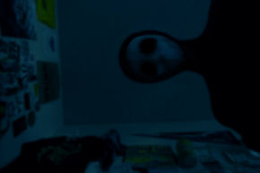

Hello, my name is Mitch. I'm here to tell you guys about an experience I had. I don't know if it was paranormal or whatever stupid words people use to describe supernatural phenomena, but after that thing visited me, I believe in that paranormal trash, now.
A week after I moved in with my brother, Edwin, after my house was foreclosed, I finished unpacking. Edwin liked the idea of me moving in, since we had not seen each other after 10 years, so I was excited, too. I soon fell asleep after I moved in. After that 1 week, I heard rustling noises coming from outside at about one in the morning. I thought it was a raccoon, so I ignored and tried to fall asleep. The next morning, I told Edwin about it, and he agreed.
The next night, however, I thought I heard my window opening and a loud thump, as if something entered my room. I darted up and looked around my room, but I saw nothing. The next morning, Edwin dropped his coffee cup when he saw me. He held up a nearby mirror and I saw myself. I had a large gash in my left cheek.
After I was rushed to the hospital, my doctor told me that I must have been sleepwalking, but then he showed me something that made my blood turn cold. He lifted up my shirt to reveal a sewn up incision where my kidneys were. I started in his eyes, my eyes widening. "You somehow lost your left kidney last night. We don't know how, though. Sorry, Mitch." my doctor told me.
The next night was my breaking point. Around midnight, I woke up to see a truly horrifying sight. I was staring face to face with a creature with a black hoodie and dark blue mask with no nose or mouth staring down at me. The thing that scared me the most was that it had no eyes. Just empty, black sockets. The creature also had some black substance dripping from it's sockets. I grabbed the camera nearby on a mantel and took a picture. After the picture took, the creature lunged at me and tried to claw open my chest to get to my lungs. I stopped it by kicking it in the face. As I ran out of my room, I grabbed my wallet. I would need the money. I ran out of my brother's house into the night. I eventually ended up in the woods near Edwin's house and tripped on a rock.
I fell unconscious and woke up in the hospital. My doctor entered the room. The same one who treated me before. "I have good news and bad news, Mitch." my doctor started. "The good news is that you had minor injuries, and your parents are going to pick you up." I sighed with relief. "The bad news is that your brother has been killed by some... thing. Sorry."
My parents took me back to Edwin's house to collect my remaining belongings, which I did. Upon entering my room, I was scared, but remained calm. I grabbed my camera then stopped dead in my tracks. In the hallway leading to my room, I saw Edwin's body and something small lying next to it. I picked up the small thing and entered my parent's car, not mentioning Edwin's corpse. I looked at the thing I had picked up and nearly vomited. I was holding my stolen half-eaten kidney, with some black substance on it.